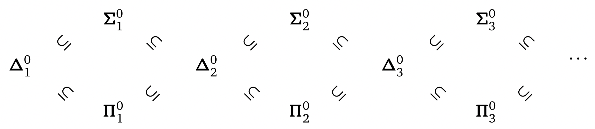

Borel Sets#
The Borel sets in a topological space are the \(\sigma\)-algebra generated by the open sets. That means one can build up the Borel sets from the open sets by iterating the operations of complementation and countable union. This generates sets that are more and more complicated, which is reflected in the Borel hierarchy. The complexity is reflected on the logical side by the number of quantifier changes needed to define the set. There is a close connection between the arithmetical hierarchy in computability and the Borel hierarchy.
Definition 6
Let \(X\) be a set. A \(\sigma\)-algebra \(\mathcal{S}\) on \(X\) is a collection of subsets of \(X\) such that \(\mathcal{S}\) is closed under complements and countable unions, that is
if \(A \in \mathcal{S}\), then \(X \setminus A \in \mathcal{S}\), and
if \((A_n)_{n \in \Nat}\) is a sequence of sets in \(\mathcal{S}\), then \(\bigcup_n A_n \in \mathcal{S}\),
If the enveloping space \(X\) is clear, we use \(\Co{A}\) to denote the complement of \(A\) in \(X\).
It is easy to derive that a \(\sigma\)-algebra is also closed under the following set-theoretic operations:
countable intersections – we have \(\bigcap A_n = \Co{\bigcup_n \Co{A_n}}\).
differences – we have \(A \setminus B = A \cap \Co{B}\).
Symmetric differences – we have \(A \bigtriangleup B = (A \cap \Co{B}) \cup (\Co{A} \cap B)\).
Definition 7
Let \((X,\mathcal{O})\) be a topological space. The collection of Borel sets in \(X\) is the smallest \(\sigma\)-algebra containing the open sets in \(\mathcal{O}\).
Of course, one has to make sure that this collection actually exists. For this, note that the intersection of any collection of \(\sigma\)-algebras is again a \(\sigma\)-algebra, so the Borel sets are just the intersection of all \(\sigma\)-algebras containing \(\mathcal{O}\). (Note the the full power set of \(X\) is such a \(\sigma\)-algebras, so we are not taking an empty intersection.)
The definition of Borel sets is rather “external”. It does not give us much of an idea what Borel sets look like. One can arrive at the family of Borel sets also through a construction from “within”. This reveals more structure and gives rise to the Borel hierarchy.
The Borel hierarchy#
To generate the Borel sets, we start with the open sets. By closing under complements, we obtain the closed sets. We also have to close under countable unions. The open sets are already closed under this operation, but the closed sets are not.
Countable unions of closed sets are classically known as \(F_\sigma\) sets. Their complements, i.e. countable intersections of open sets, are the \(G_\delta\) sets.
We can continue this way and form the \(F_{\sigma\delta}\) sets – countable intersections of \(F_\sigma\) sets – the \(G_{\delta\sigma}\) sets – countable unions of \(G_\delta\) sets – and so on.
The \(\sigma\delta\)-notation soon becomes rather impractical, and hence we replace it by something more convenient, and much more suggestive, as we will see later.
To make the hierarchy that we are introducing well-behaved, we focus on metrizable spaces.
Definition 8
Let \(X\) be a metrizable topological space. We inductively define the following collection of subsets of \(X\).
Hence the open sets are precisely the sets in \(\bSigma^0_1\), the closed sets are the sets in \(\bPi^0_1\), the \(F_\sigma\) sets from the class \(\bSigma^0_2\) etc. If it is clear what the underlying space \(X\) is, we drop the reference to it and simply write \(\bSigma^0_n\) and \(\bPi^0_n\). Besides, we will say that a set \(A \subseteq X\) is (or is not) \(\bSigma^0_n\) or \(\bPi^0_n\), respectively.
Question: Does the collection of all \(\bSigma^0_n\) and \(\bPi^0_n\) exhaust the Borel sets of \(X\)?
We will see that the answer is no. We have to extend our inductive construction into the transfinite and consider classes \(\bSigma^0_\xi\), where \(\xi\) is a countable infinite ordinal.
The Borel sets of finite order#
We fix a Polish space \(X\). We want to establish the basic relationships between the different classes \(\bSigma^0_n\) and \(\bPi^0_m\) for \(X\).
It follows from the definitions that \(\bPi^0_n \subseteq \bSigma^0_{n+1}\) and \(\bSigma^0_n \subseteq \bPi_{n+1}\).
Lemma 4
In any metric space \((X,d)\), every closed set is a \(G_\delta\) set.
Proof. Let \(F \subset X\) be closed. For \(n \geq 0\), put
Each \(F_n\) is open, and \(F \subseteq \bigcup_{n \in \Nat} F_n\).
Moreover, if \(x \in \bigcup_{n \in \Nat} F_n\), then there exists a sequence \((x_n)\) such that for all \(n\), \(x_n \in F\) and \(x \in U_{2^{-n}}(x_n)\). It follows that \(x_n \to x\), and since \(F\) is closed, \(x\in F\). Thus
which is \(G_\delta\).
Corollary 2
\(\bSigma^0_1 \subseteq \bSigma^0_2\) and \(\bPi^0_1 \subseteq \bPi^0_2\).
The second statement follows by passing to complements: If \(F\) is closed,
where the \(F_n\) are closed.
There are also sets that can be both \(\bSigma^0_2\) and \(\bPi^0_2\), but neither \(\bSigma^0_1\) nor \(\bPi^0_1\). For example, consider the half-open interval \([0,1)\).
Therefore, it makes sense to define the hybrid classes:
Using induction, we can extend the inclusions in a straightforward way to higher \(n\).
Theorem 8 (Weak Hierarchy Theorem)

Are the inclusions are proper?
If the space is discrete, every open set is closed and vice versa, and hence the whole hierarchy collapses.
Any countable set is \(\bSigma^0_2\), since a singleton set is closed, and a countable set is a countable union of singletons. In a perfect Polish space, we can find countable sets that are neither open nor closed. The complements of such sets then provide examples of \(\bPi^0_2\) sets that are neither open nor closed, showing that the first two levels of the Borel hierarchy are proper for perfect Polish spaces.
Using the concept of Baire category, we will later show that the rationals \(\mathbb{Q}\) are \(\bSigma^0_2\) but not \(\bPi^0_2\), thereby separating \(\bSigma^0_2\) and \(\bPi^0_2\).
It is much harder to find specific examples for the higher levels, e.g. a \(\bSigma^0_5\) set that is not \(\bSigma^0_4\). This separation will be much facilitated by the introduction of a definability framework for the Borel sets. Therefore, we defer the proof of the strong hierarchy theorem for a while.
Examples of Borel sets – continuity points of functions#
Theorem 9 (Young)
Let \(f: X \to Y\) be a mapping between metric spaces. Then
is a \(\bPi^0_2\) (i.e. \(G_\delta\)) set.
Proof. The function \(f\) is continuous at \(a\) if and only if for any \(\eps > 0\),
Given \(\eps > 0\), let
We claim that \(C_\eps\) is open. Suppose \(a \in C_\eps\). Choose a suitable \(\delta\) that witnesses that \(a \in C_\eps\). We show \(U_\delta(a) \subseteq C_\eps\). Let \(b \in U_\delta(a)\). Choose \(\delta^*\) so that \(U_{\delta^*}(b) \subseteq U_\delta(a)\). Then
Notice further that \(\eps > \eps^*\) implies \(C_\eps \supseteq C_{\eps^*}\). Hence we can represent \(C_f\) as
a countable intersection of open sets.
Here is a nice application of Young’s theorem.
The function \(f: \Real \to \Real\) given by
is a function that is continuous at every irrational, discontinuous at every rational number. How about the other way around – discontinous at exactly the irrationals? As noted above, the rationals are a \(\bSigma^0_2\) set that is not \(\bPi^0_2\). Hence such a function cannot exist.
We finish this lecture by showing that Young’s Theorem can be reversed.
Theorem 10
Given a \(\bPi^0_2\) subset \(A\) of a perfect Polish space \(X\), there exists a mapping \(f: X \to \Real\) such that \(f\) is continuous at every point in \(A\), and discontinuous at every other point, i.e. \(C_f = A\).
Proof. Fix a countable dense subset \(D \subseteq X\). We first deal with the easier case that \(A\) is open. Let
It is clear that \(f\) is continuous on \(A\). Now assume \(x \not \in A\). If \(x \not\in \Cl{A}\), then there exists \(U_\eps(x) \subseteq \Co{\,\Cl{A}}\). Any \(U_{\eps^*}(x) \subseteq U_\eps(x)\) contains points from both \(D\) and \(\Co{D}\), so it is clear that \(f\) is not continuous at \(x\). Finally, let \(x \in \Cl{A} \setminus A\). Then \(f(x) = 1\), but points of \(A\) are arbitrarily close, where \(f\) takes value \(0\).
Now we extend this approach to general \(\bPi^0_2\) sets. Suppose
By replacing \(G_n\) with \(G_n^* = G_1 \cap \dots \cap G_n\), we can assume that
The idea is to define \(f_n\) as above for each \(G_n\) and then ``amalgamate’’ the \(f_n\) in a suitable way. Assume for each \(n\), \(f_n: X \to \Real\) is defined as above such that \(C_{f_n} = G_n\). Let \((b_n)\) be a sequence of positive real numbers such that for all \(n\),
for example, \(b_n = 1/n!\). We now form the series
Since \(|f_n(x)| \leq 1\), \(|f(x)| \leq \sum_n b_n < \infty\). Furthermore, \((f_n)\) converges uniformly to \(f\), for
and the last bound is independent of \(x\) and converges to \(0\).
It follows by uniform convergence that if each \(f_n\) is continuous at \(x\), \(f\) is continuous on \(x\), too. Hence \(f\) is continuous on \(A\).
Now assume \(x \not\in A\). Then there exist \(n\) such that \(x \in G_n \setminus G_{n+1}\). Hence
Again, we distinguish two cases.
First, assume \(x \not\in \Cl{G_{n+1}}\). Then there exists \(\delta > 0\) such that \(U_\delta(x) \subseteq \Co{G_{n+1}}\). This also implies \(U_\delta(x) \subseteq \Co{G_{k}}\) for any \(k \geq n+1\). Besides, since \(G_n\) is open, we can chose \(\delta\) sufficiently small so that \(U_\delta(x) \subseteq G_n\). For \(y \in \Co{D} \cap U_\delta(x)\) we have \(f_k(y) = 1\) for all \(k \geq n+1\), and hence \(f(y) = \sum_{k > n} b_k f_k(y) > 0\). On the other hand, if \(y \in D \cap U_\delta(x)\), then \(f_k(y) = 0\) for all \(k \geq n+1\), and also \(f_0(y) = \dots = f_n(y) = 0\), since \(y \in G_n\), and thus \(f(y) = 0\). Hence there are points arbitrarily close to \(x\) whose \(f\)-values differ by a constant lower bound, which implies \(f\) is not continuous in \(x\).
Finally, suppose \(x \in \Cl{G_{n+1}}\). Then \(f_{n+1}(x) = 1\) and hence \(f(x) \geq b_{n+1} > 0\). On the other hand, for any \(y \in G_{n+1}\), \(f(y) \leq \sum_{k> n+1} b_k < b_{n+1} = f(x)\). That is, there are points arbitrarily close to \(x\) whose \(f\)-value differs from \(f(x)\) by a constant lower bound. Hence \(f\) is discontinuous at \(x\) in this case, too.